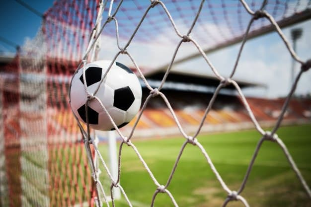
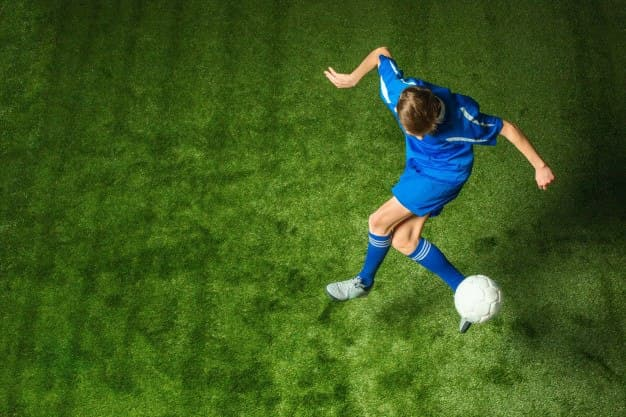
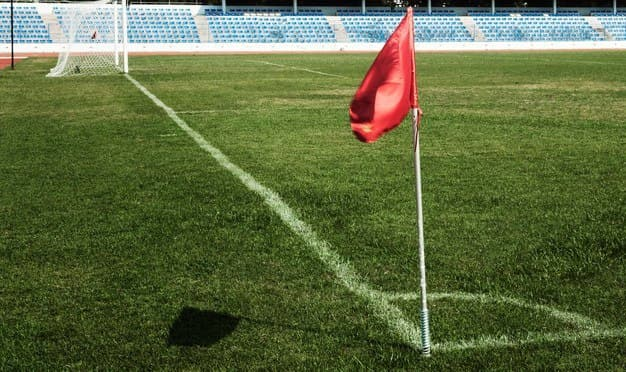

Lampions League
Fundada em 1994, a Lampions League é um torneio envolvendo 16 equipes do Nordeste divididos então em dois grupos com oito clubes em cada.

Origem do nome
O trocadilho entre as palavras “Champions” e “Lampions” faz referência ao mito de lampião, mas não ao homem que foi Virgulino Ferreira da Silva.
Partidas
Os quatro melhores de cada chave, avançam à fase do mata-mata.

Taça da Lampions League
Considerado um dos campeonatos regionais mais importantes do país.

Saiba mais sobre a Lampions League
Veja informações em nosso site.